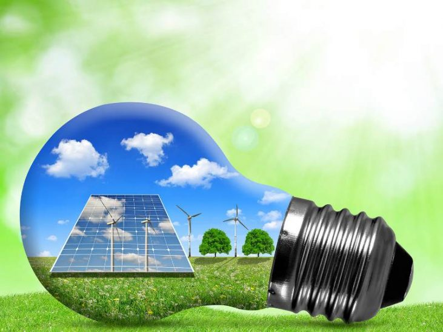

Nosso planeta, nossa casa!
Ajude a protegê-lo hoje.
Nossos problemas estão interligados, assim como as soluções. Seja em um protesto nas ruas, na limpeza das praias, assinando uma petição contra grupos poderosos ou recuperando uma floresta, nós prosperamos e somos mais fortes quando cooperamos. É por isso que o Green Planet existe.
Salvem as florestas
A floresta tropical e subtropical húmida é um tipo de ecossistema que ocorre na região compreendida entre o Trópico de Câncer e o Trópico de Capricórnio.
Saiba maisSalvem as águas
O desperdício de água no Brasil chega a quase 35%. No Tocantins estima-se que esse número é superior a 40% da água disponibilizada para a população.
Saiba maisReciclar é um dever
A cultura do desperdício, não apenas de recursos, mas também de energia e produtos acabados, vem sofrendo um duro golpe em várias sociedades.
Saiba maisEnergia renovável
A Energia Eólica é o processo pelo qual o vento é transformado em energia cinética e a partir dela em eletricidade com o uso de equipamentos específicos.
Saiba maisEnergia renovável
As fontes renováveis de energia são aquelas formas de produção de energia em que suas fontes são capazes de manter-se disponíveis durante um longo prazo, contando com recursos que se regeneram ou que se mantêm ativos permanentemente. Em outras palavras, fontes de energia renováveis são aquelas que contam com recursos não esgotáveis.
Existem vários tipos de fontes renováveis de energia, das quais podemos citar a solar, a eólica, a hídrica, a biomassa, a geotérmica, a das ondas e a das marés. Veja um breve resumo sobre cada uma dessas energias não esgotáveis:
Energia hidroelétrica
A energia hidroelétrica utiliza-se do movimento das águas dos rios para a produção de eletricidade. Em países como Brasil, Rússia, China e Estados Unidos, ela é bastante aproveitada pelas usinas que transformam a energia hidráulica e cinética em eletricidade.
Energia de biomassa
A biomassa corresponde a toda e qualquer matéria orgânica não fóssil. Assim, pode-se utilizar esse material para a queima e produção de energia, por isso ela é considerada uma fonte renovável. Sua importância está no aproveitamento de materiais que, em tese, seriam descartáveis, como restos agrícolas (principalmente o bagaço da cana-de-açúcar), e também na possibilidade de cultivo.
Energia geotérmica
A energia geotérmica corresponde ao calor interno da Terra. Em casos em que esse calor se manifesta em áreas próximas à superfície, as elevadas temperaturas do subsolo são utilizadas para a produção de eletricidade.
Energia heliotérmica
A energia heliotérmica, ou energia solar concentrada, é a geração elétrica a partir do calor do sol. Usinas heliotérmicas (termossolares) utilizam vários espelhos (heliostatos) para direcionar a radiação solar a um receptor que armazena um líquido. O líquido aquece e gera o vapor que alimenta as turbinas ligadas ao gerador elétrico.

Ajude-nos a salvar os animais
Saiba mais
Faça desse Mundo um lugar melhor
Saiba maisTubarão-baleia em risco de extinção
Saiba mais
Quer um abraço de urso?
Saiba maisFloresta Amazônica
A floresta amazônica é considerada a maior floresta tropical do mundo e concentra enorme biodiversidade. Além disso, ela faz parte do bioma Amazônia, o maior dos seis biomas brasileiros.
Ela corresponde a 53% das florestas tropicais ainda existentes. Por isso, a sua conservação é debatida em âmbito internacional, em virtude de sua dimensão e importância ecológica.
O que é? Fauna Flora CuriosidadesO que é a Floresta Amazônica?
A Floresta Amazônica é a região tida como a maior floresta tropical do mundo ocupando, aproximadamente, 600 milhões de hectares. Seu nome surgiu com os antigos habitantes e expedições europeias que relataram ataques promovidos por mulheres nuas que usavam arco e flecha no Rio Amazonas.
Também é chamada de Selva Amazônica, Floresta Equatorial da Amazônia, Floresta Pluvial ou Hileia Amazônica. Trata-se de floresta latifoliada úmida e é um dos seis grandes biomas brasileiros. Abrange as regiões Nordeste, Norte e Centro-Oeste brasileiras, sendo o maior bioma terrestre do país.
A título de curiosidade, no dia 05 de setembro comemora-se o Dia da Amazônia por ser a data de criação da Província do Amazonas, em 1850, por D. Pedro I. Em 2008, foi uma das candidatas às novas 7 Maravilhas da Natureza, sendo classificada em primeiro lugar no ano de 2009.
Animais da Amazônia

A fauna amazônica é a mais espetacular do planeta, incluindo felinos, roedores, aves, quelonios e primatas.
Sua bacia hidrográfica possui a maior diversidade de peixes do mundo: entre 2.500 e 3 mil espécies. Destas, jaú, surubim, cachorra, matrinxã, piranha e tambaqui são alguns dos mais cobiçados dos amantes da pesca esportiva. Porém, a lista dos preferidos é encabeçada pelo tucunaré, famoso por ser muito bom de briga.
Além disso, na Amazônia vivem 1.300 espécies de pássaros e 300 de mamíferos. No total, a fauna da região totaliza mais de 2 milhões de espécies, muitas das quais encontradas apenas na região. Com freqüência os pesquisadores descobrem novas espécies. Alguns animais são para lá de exóticos: são os casos do peixe-boi (de mais de 2 metros de comprimento), da ave guará de penas vermelhas e o poraquê, “peixe elétrico” que liberar carga de alta voltagem.
Isso, sem falar de espécies já famosas como tucano, piranha, araras, papagaios e macacos.
Vegetação da floresta
A Floresta Amazônica, no geral, é composta por uma vegetação densa e árvores de grande porte. Pode ser dividida em três categorias, sendo elas:
- Mata de terra firme: a maior parte da floresta que não sofre inundações por localizar-se em partes mais altas, apresentando árvores de grande porte. São exemplares típicos a castanheira, angelim, mogno, cedro, andiroba, além de cipós, palmeiras, liquens e musgos.
- Mata de igapó: permanentemente inundada por se localizar em regiões muito baixas, são alagadas com frequência. Por isso, as plantas se adaptaram a esse ambiente para sobrevivência. São exemplos os buritis, orquídeas, vitória-régia e bromélias.
- Mata de várzea: sua localização em áreas pouco menos baixas que possibilita a inundação periódica conforme a ação dos rios. Apresenta solo muito fértil em razão dos sedimentos depositados pela água fluvial. As plantas nascem a água baixa e os frutos aparecem quando sobem. Exemplares típicos são jatobá, andiroba, samaúma, cumaru e seringueira.
Criada em 1953, a Amazônia Legal é uma área que abrange nove estados brasileiros: Acre, Amapá, Pará, Amazonas, Rondônia, Roraima, Mato Grosso, Tocantins e Maranhão. Ela compreende, aproximadamente, 61% de todo o território brasileiro.
O objetivo da criação da Amazônia Legal é promover o desenvolvimento econômico e social da região.
No dia 5 de setembro é comemorado o "Dia da Amazônia", a data foi escolhida pois foi no dia 5 de setembro de 1850 que a província do Amazonas foi criada por D.Pedro I.
meio ambiente
O meio ambiente corresponde a todo espaço que nos rodeia, incluindo aquele em que vivemos. Fazem parte do meio ambiente, todos os elementos da natureza como montanhas, rios, solo, água, floresta, relevo, geologia, paisagem e fatores meteoroclimáticos, árvores, animais, incluindo o homem e tudo criado por ele.
Energias renováveis são aquelas obtidas de fontes naturais capazes de se regenerar, portanto virtualmente inesgotáveis e não alteram o balanço térmico do planeta. A energia não renovável é obtida dos combustíveis fósseis que necessitam de milhares de anos para sua formação, sendo, portanto esgotáveis. Ex: - Energia Termo-Solar - Energia Solar Passiva - Energia Eólica - Energia Geotérmica - Central Hidrelétrica.
Os animais dispersam sementes "plantando" árvores, controlam populações de espécies, e ainda produzem remédios importantes para a cura de muitas doenças. Cada animal tem sua função na natureza e a sua ausência acarreta em prejuízos incalculáveis para a humanidade. A Flora são todas as espécies de plantas, cada uma tem sua importância, seja na alimentação para as animais e nos humanos, como na capturarão de gases tóxicos à natureza NBA realização da fotossíntese e liberando oxigênio na sua respiração.
Reciclar significa transformar objetos materiais usados em novos produtos para o consumo. No processo de reciclagem, que além de preservar o meio ambiente também gera riquezas, os materiais mais reciclados são o vidro, o alumínio, o papel e o plástico. Esta reciclagem contribui para a diminuição significativa da poluição do solo, da água e do ar. Muitas indústrias estão reciclando materiais como uma forma de reduzir os custos de produção.
Na reciclagem aproveitamos a matéria prima para produzir novos produtos, Reutilizar é usar o material de novo, o material não seria necessariamente descartado, não passaria por outro processo produtivo, estando em condições, pode ser reutilizado.
Energia eólica
A utilização da energia eólica comporta numerosas vantagens face às energias tradicionais e mesmo em comparação com outros tipos de energias renováveis, em função do seu maior desenvolvimento.
A energia eólica é muitas vezes não compreendida pelas populações, principalmente pelas populações mais próximas dos parques eólicos, mas a energia eólica possui inúmeras vantagens para a sociedade em geral, desde a redução da dependência dos combustíveis fósseis até à criação de empregos.
Apesar das aparentes vantagens no uso de energia eólica para a produção de energia elétrica, este tipo de aproveitamento energético eólico apresenta também desvantagens e impactos significativos principalmente no uso de grandes aerogeradores, parques e usinas eólicas.
| Vantagens | Desvantagens |
|---|---|
| É uma tecnologia inesgotável | Como é preciso um fenômeno da natureza para funcionar, às vezes a energia não é gerada em momentos necessários, o que torna difícil a integração da produção dessa tecnologia |
| Não emite gases poluentes e não gera resíduos | Pode ser superada pelas pilhas de combustível (H2) ou pela técnica da bombagem hidroelétrica |
| Os parques eólicos podem ser utilizadas também para outros meios, como a agricultura e a criação de gado | Os parques eólicos geram um grande impacto visual devido aos aerogeradores |
| É uma das fontes mais baratas de energia, podendo competir em termos de rentabilidade com as fontes de energia tradicionais | Causa impacto sonoro, pois o vento bate nas pás produzindo um ruído constante de aproximadamente 43 decibéis, tornando necessário que as habitações mais próximas estejam no mínimo a 200 metros de distância |
| Não requer uma manutenção frequente, uma vez que sua revisão é semestral | Pode afetar o comportamento habitual de migração das aves |
Reciclagem
Um dos principais problemas ambientais do mundo contemporâneo é, sem dúvida, a grande quantidade de resíduos gerados pela população. Junto com isso, aparece um problema ainda maior, que é a falta de reaproveitamento desses produtos.
Para se ter ideia da gravidade desta situação, dados divulgados pela Associação Brasileira de Empresas de Limpeza Pública e Resíduos Especiais (Abrelpe) apontam que a quantidade de lixo produzido no Brasil vem batendo recorde ano após ano. Em 2015, foram geradas 79,9 milhões de toneladas de lixo em todo o País, número 1,7% maior do que o gerado em 2014.
À primeira vista, considerando o tamanho do território e a quantidade de cidadãos brasileiros, pode parecer um número razoável, mas este é um dado bastante alarmante. Isso porque a quantidade de lixo produzido no Brasil cresce a uma taxa cinco vezes maior que o da população.
Apesar de muitas cidades contarem com serviços de coleta seletiva destinados especificamente à reciclagem, existem locais em que não existe esse serviço. Para dar conta dessa demanda, existem diversos catadores de itens recicláveis — que podem atuar tanto por si mesmos como para uma cooperativa de reciclagem de resíduos. Esses profissionais são fundamentais para aumentar a porcentagem do lixo que é reciclado no Brasil.
De acordo com dados do Plano Nacional de Resíduos Sólidos (PNRS), apesar de 30% de todo o lixo produzido no Brasil ter potencial de reciclagem, apenas 3% de fato é reaproveitado. Esses números revelam que há um grande desperdício tanto do ponto de vista ambiental quanto econômico e social, uma vez que a reciclagem é uma fonte de renda para milhares de famílias.
Veja abaixo alguns números da reciclagem por setores:
- Latas de alumínio
- Papel 44%
- Vidro 47%
- Embalagem PET 55%
- Latas de aço 44%
- Embalagem longa-vida 27%
Aquecimento global

O aquecimento global é o processo de mudança da temperatura média global da atmosfera e dos oceanos. O acúmulo de altas concentrações de gases de efeito estufa na atmosfera bloqueia o calor emitido pelo sol e o prende na superfície terrestre, aumentando a temperatura média da Terra.
O efeito estufa é um processo essencial para a existência de vida na forma em que a conhecemos. Sem ele a temperatura média do planeta seria em torno de 18°C negativos! Para se ter uma ideia, a temperatura média global próxima à superfície é de 14ºC. Se hoje estamos vivos é devido ao efeito estufa, que mantém o planeta habitável.
saiba maisO mundo está se tornando mais quente. Mas esse é um processo natural da Terra ou decorre da ação humana? Há muita discussão em torno do assunto, mas é sempre bom esclarecer o que é o aquecimento global, processo que o vídeo produzido pela equipe do Portal eCycle explica:
Assim, o aquecimento global é um processo que decorre da intensificação do efeito estufa - a radiação que vem da luz do sol atinge a Terra e é absorvida por gases presentes na atmosfera, os quais passam a emitir de volta para a superfície terrestre radiação infravermelha (calor), aumentando a temperatura do planeta. Os gases que interagem com a radiação solar produzindo radiação infravermelha são chamados de Gases de Efeito Estufa.
Gases do efeito estufa
Os gases de efeito estufa (GEE) são gases que absorvem uma parte dos raios do sol e os redistribuem em forma de radiação na atmosfera, aquecendo o planeta em um fenômeno chamado efeito estufa.
Os principais GEE que temos são: gás carbônico (CO2), metano (CH4), óxido nitroso (N2O), ozônio estratosférico (O3), halocarbonos (clorofluorcarbonos, os hidroclorofluorcarbonos e os hidrofluorcarbonos) e vapor d’água.
Em relatório encomendado pelo Fórum Econômico Mundial, intitulado Global Risks 2013, o aquecimento global associado ao desequilíbrio do efeito estufa já era reconhecido como o terceiro maior risco global por conta dos grandes fenômenos climáticos de 2012, como o furacão Sandy e as enchentes na China. A indústria seguradora é um bom exemplo disso - acompanha com apreensão a crescente sucessão de desastres naturais que impactam, direta e imprevisivelmente, o risco de suas operações.
Uma pesquisa liderada por Nigel Arnell, diretor do Instituto Walker, da Universidade de Reading, no Reino Unido, demonstra que o estabelecimento de políticas que garantam o aumento de temperatura de até 2°C até o ano de 2100, pode reduzir 65% dos impactos ambientais. A previsão é de que até o fim do século, o aquecimento global conduzirá o planeta a uma temperatura até 4°C mais quente. O Acordo de Paris, estabelecido em dezembro de 2015, tem a meta de limitar o aquecimento global em 2°C até 2100.